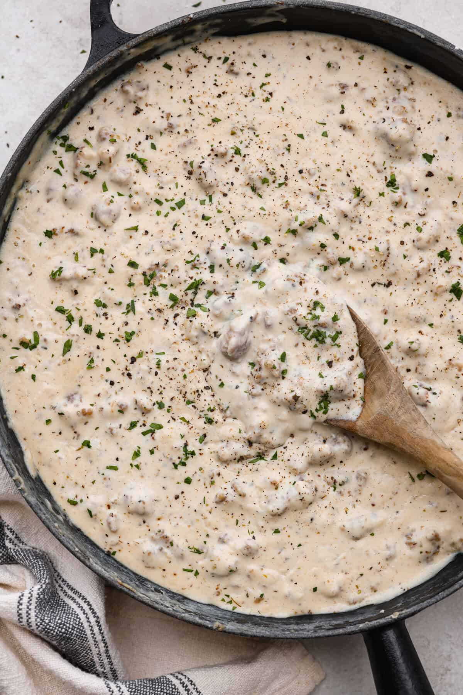

Sausage Gravy

Ingredients
- 1 lb seasoned pork sausage
- 4 tbsp flour
- 2 cups whole milk
- salt
- pepper
- thyme
- ground nutmeg
Instructions
- Heat your skillet nice and hot!
- Crumble and brown the sausage.
- Once sausage is browned, add flour to the pan and stir well. Don't drain the pan!
- Continue to stir and cook until the flour has reached a medium brown color.
- Add in the milk just a little bit at a time. If you add too much milk too fast, your sauce will split. You want to start with 1/8 to 1/4 cup of milk at a time to start. Once it starts to become a liquid, you can add the milk in a little faster. Honestly, slower is better here until you get a feel for it.
- Add in your seasonings. I season with my heart so I can't in good conscience give you any measurements here. Taste as you go, add a little at a time because you can always add more.
- Bring your sauce to a light boil, then reduce to a simmer and let cook for 5 minutes.
- Serve with amy of your breakfast favorites!
Quick Note
- Sausage Gravy is traditionally made from the soul and all measurements are approximate.
- This pairs fantastic with some homemade biscuits!
- This recipe assumes that you are using a well seasoned cast iron skillet. If you are not, fear not! You will just need to ensure your pan is nice and hot and coat with a layer of neutral oil if needed.
- My mom taught me how to make homemade sausage gravy, much like her mother before her did. May it serve you well as it has my family for generations.
Home